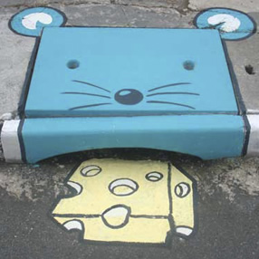
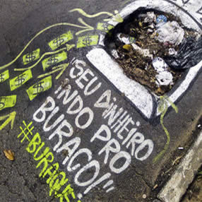
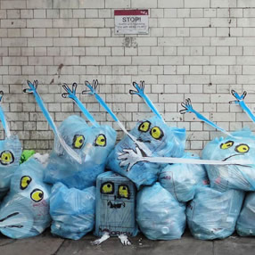
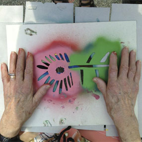
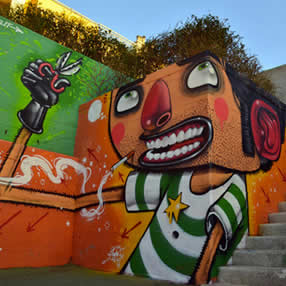
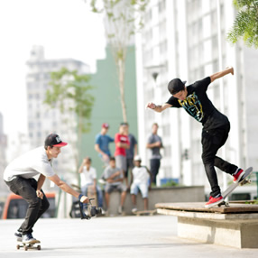
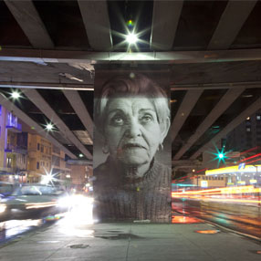
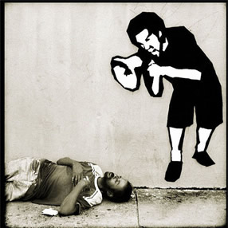

QS/OQF?
|
CONTATO
HOME
MÁTERIAS
REVISTA
VÍDEOS
GAME
AGENDA
Matérias

Entrevista com criadores do Projeto 6EMEIA

Grafites em buracos de SP chama atenção de poder público

Artista espanhol encontra jeito criativo de transformar lixo em arte

Projeto de graffiti para terceira idade

O graffiti com humor do italiano Mr Thoms

5 Lugares legais pra andar de skate em SP

Minhocão em SP ganha galeria de arte a céu aberto com rostos dos moradores

A arte criativa do artista brasileiro Alexandre Orion
Urban Art | 2013 - 2013